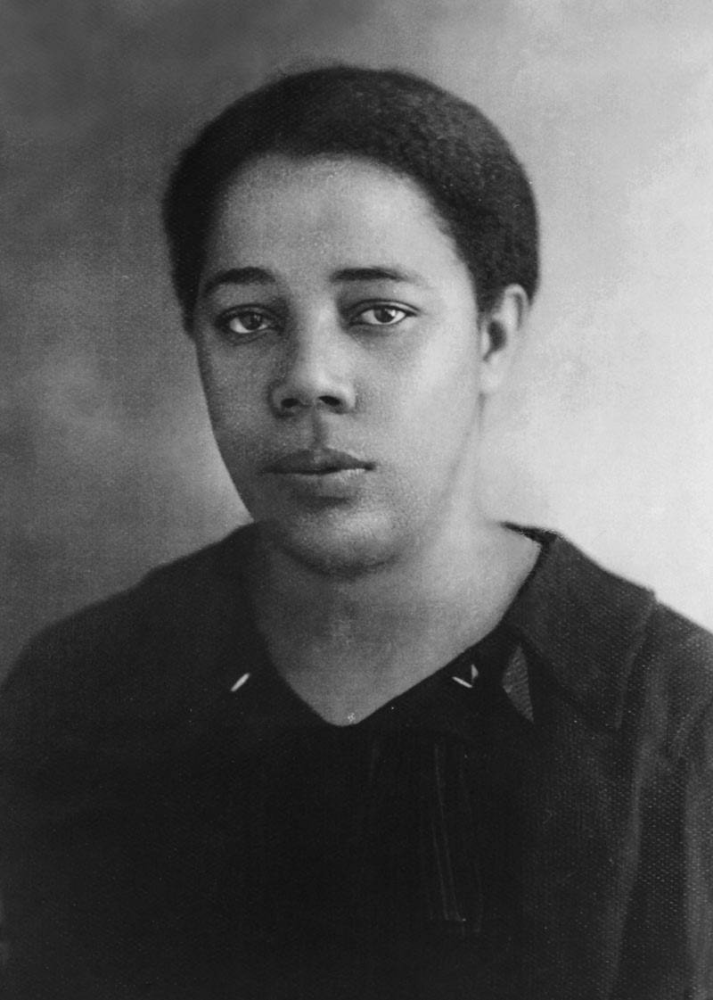

Educação, luta e representatividade

Nascida em 11 de julho de 1901, em Florianópolis (SC), Antonieta de Barros foi uma educadora, jornalista e política brasileira. Tornou-se a primeira mulher negra eleita deputada estadual no Brasil, em 1934. Sua trajetória foi marcada pela defesa da educação pública, da igualdade racial e dos direitos das mulheres, sendo uma das figuras mais importantes da história política e social do país.
Antonieta de Barros faleceu em 28 de março de 1952, em Florianópolis. Sua morte ocorreu por causas naturais, após uma vida dedicada à educação e à política. Mesmo enfrentando preconceitos de gênero e raça, deixou um legado duradouro que inspira gerações até hoje.